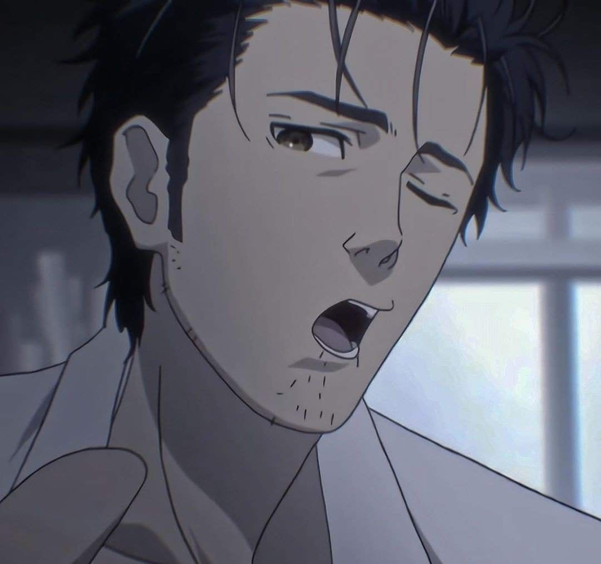
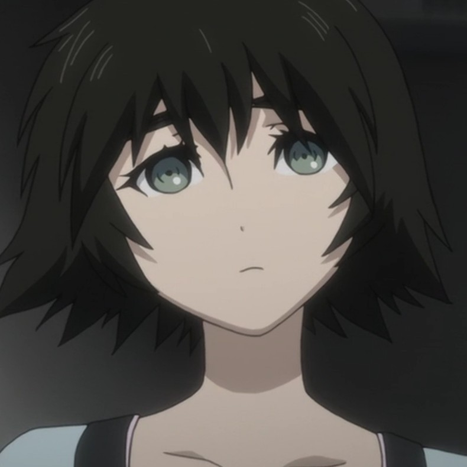
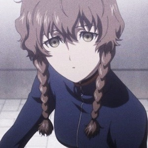
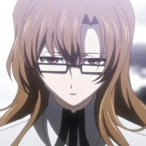
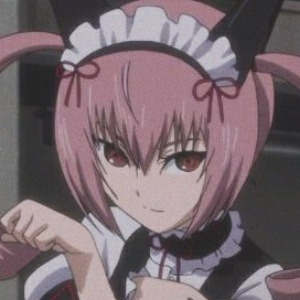
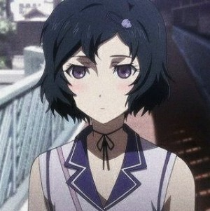

Rintaro Okabe
O “cientista maluco” criador do Laboratório de Experimentos do Futuro. Cria para si mesmo o alter-ego Hououin Kyouma, que usa para justificar as maluquices que comete em nome de seus estudos. Apesar da aparência extrovertida, Okabe é de fato um gênio da ciência e um dos responsáveis pela criação da máquina do tempo, que mudará para sempre a forma como encara a vida.
Makise Kurisu (Kuristina)

Um prodígio da ciência e responsável pela fórmula da criação da máquina do tempo. De temperamento ardiloso, esconde um lado de grande afeto pelos amigos e admiração por Okabe. Kurisu é peça-chave na descoberta das diferentes linhas do tempo e a influência das viagem temporais.
Mayuri "Mayushi" Shiina
Amiga de infância de Okabe, cosplayer assídua e meiga ao extremo. Mayuri é o grande elo que une os membros do laboratório, sempre animada e pronta para dar conselhos. É sempre nela que Okabe ou “Okarin”, como ela carinhosamente o chama, encontra refúgio diante de suas decisões.
Itaru “Daru” Hashida

Co-criador do laboratório, melhor amigo de Okabe e viciado em jogos MMO. Hacker nato, Daru se torna um dos responsáveis diretos pela alteração nas linhas do tempo após invadir o sistema da SERN.
Amane Suzuha
A princípio apenas uma garota pacata, Suzuha revela-se uma viajante do tempo. Sua missão é evitar a todo custo a Terceira Guerra Mundial, que tornou-se realidade em seu futuro, e para isso, conta com Okabe enquanto busca por seu pai.
Kiryu Moeka
É a mais misteriosa entre os personagens de Steins;Gate. Comunicando-se basicamente apenas pelo celular, Moeka nunca revela suas reais intenções e, ainda assim, é acolhida pela turma do laboratório. É peça-chave em todas as linhas do tempo.
Rumiho “Faris” Akiha
Herdeira da família que comanda a cidade de Akihabara, Faris é uma figura popular, responsável por espalhar a cultura moe. Trabalha vestida caráter no mesmo restaurante que Mayuri, e sempre incorpora aspectos de gato em seus diálogos. No entanto, esconde uma verdade sombria por trás de seu comportamento sempre alegre.
Tennouji “Mr. Braun” Yuugo

Proprietário do prédio onde se encontra o laboratório, vive cobrando o aluguel de Okabe. Patrão de Suzuha e pai da pequena Nae, é um homem de pouca conversa e cujo passado parece estar ligado ao de sua funcionária.
Urushibara Ruka
Ruka é o melhor amigo de Mayuri e “pupilo” de Okabe, a quem vê com grande admiração e uma espécie de amor platônico. Andrógeno, Ruka identifica-se como mulher e, em determinado momento, por meio dos experimentos temporais de Okabe, acaba vivendo esta realidade.